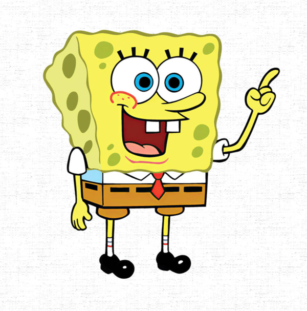

Contact Information
SpongeBob SquarePants
Address: 124 Conch Street, Bikini Bottom
Phone: (123) 555-1234
Email: sponge.bob@krustykrab.com
LinkedIn: linkedin.com/in/squarepants

Skills
- Fry Cooking: Expert in preparing Krabby Patties with speed, precision, and a dash of love.
- Customer Service: Always friendly, cheerful, and eager to help Bikini Bottom residents.
- Jellyfishing: Proficient in catching jellyfish, with a deep understanding of jellyfish migration patterns.
- Bubble Blowing: Skilled in creating complex and artistic bubble shapes.
- Cleaning: Meticulous and thorough in maintaining a clean and organized environment.
- Teamwork: Works well with others, including friends like Patrick Star and Sandy Cheeks.
- Resilience: Positive attitude, even under pressure or challenging situations.
Education
Diploma in Nautical Navigation (Incomplete)
Years Attended: Ongoing
- Struggling to pass the driving test but demonstrating persistent effort and dedication.
Bikini Bottom Community College
Coursework in Culinary Arts
Years Attended: 2005 - 2006
- Focused on advanced cooking techniques, food safety, and creative culinary presentations.
Experience
Fry Cook
Years: 1999 - Present
- Prepare and cook Krabby Patties to the highest standards, ensuring customer satisfaction.
- Maintain a clean and organized kitchen, following all health and safety guidelines.
- Assist with inventory management, including ordering and stocking ingredients.
- Consistently recognized as Employee of the Month (for over 374 consecutive months).
Chum Bucket (Temporary Assignment)
Fry Cook
Year: 2004
- Briefly worked at the Chum Bucket under Plankton’s supervision.
- Gained experience with alternative cooking techniques, though quickly returned to the Krusty Krab.
Bikini Bottom Jellyspotters Club
Jellyfisher
Years: 2000 - Present
- Actively participate in jellyfishing excursions, often leading the group.
- Document jellyfish sightings and contribute to local marine biology research.
References
Mr. Eugene H. Krabs
- Employer, Krusty Krab
Phone: (123) 555-6789
Email: mr.krabs@krustyk.com
Patrick Star
- Best Friend & Jellyfishing Partner
Phone: (123) 555-2468
Email: patrick.star@rockbottom.com
Sandy Cheeks
- Friend & Science Collaborator
Phone: (123) 555-1357
Email: sandy.cheeks@texasbikini.com